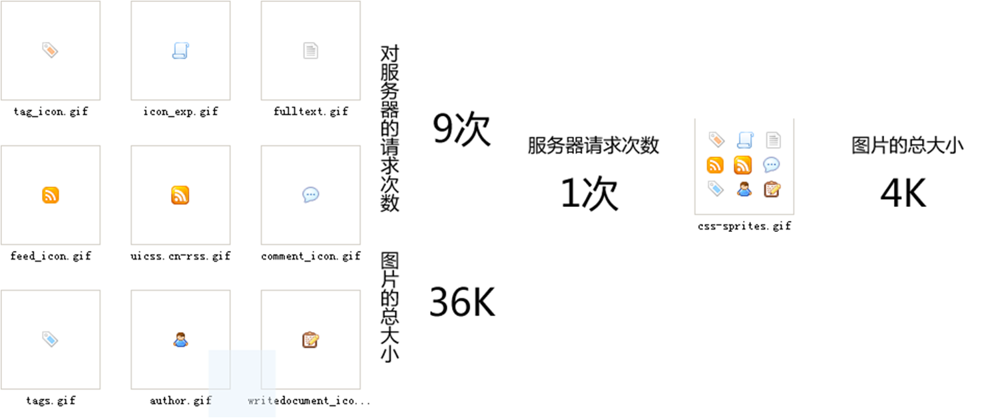

CSS Sprites的原理（图片整合技术）(CSS精灵)/雪碧图
一、将导航背景图片，按钮背景图片等有规则的合并成一张背景图，即将多张图片合为一张整图，然后用background-position”来实现背景图片的定位技术。
二、图片整合的优势：
1）通过图片整合来减少对服务器的请求次数，从而提高 页面的加载速度。
2）通过整合图片来减小图片的体积。

2、图片整合原则
1）边切图边整合。
2）定位时避免使用bottom,right等，用具体的数值，为了避免当你的宽度或高度上扩展sprites图时出现位置的错误。
3）将小图标预留足够的空间，因为使用这些图标元素通常会有大量的内容而且可能需要扩展的间距，以至于其它的图片可能会意外出现在本区域内。一般的情况下，会将这些小图标整合到文件的最右侧。
4）单张整合好的sprite图片在100KB以内。
5）按分类整合图片。